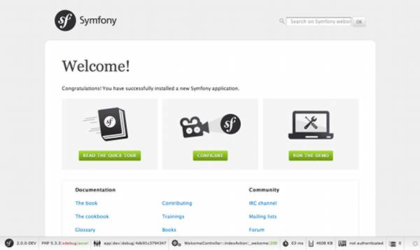

Note
- 対象バージョン：2.3 (2.1以降)
- 翻訳更新日：2013/9/27
Symfony のインストールと設定¶
この章では、Symfony をインストールする方法について解説します。 Symfony では「ディストリビューション」が提供されています。 ディストリビューションとは入門者向けの Symfony プロジェクトファイル一式で、これをダウンロードすればすぐに開発を始められます。
Tip
ソースコード管理システムの元でプロジェクトを新規作成し、ソースコード管理システムに登録するベストプラクティスを知りたい方は、この章のソースコード管理システムで管理するにはの節を参照してください。
Symfony2 ディストリビューションのダウンロード¶
Tip
まずはじめに、PHP 5.3.8 以上が動作する Web サーバ(Apache など)がインストールされ、設定済みかどうか確認して下さい。 Symfony2 の動作要件について詳しくは、Symfony2 の動作に必要な要件 を参照してください。
Symfony2 のディストリビューションは完全に動作するアプリケーションです。Symfony2 コアライブラリとコアバンドルが実用的なディレクトリ構造に格納され、いくつかの初期設定が含まれています。 Symfony2 のディストリビューションをダウンロードすることは、 アプリケーションをすぐに開発し始められる実用的なアプリケーションのスケルトンをダウンロードしている事にもなります。
はじめに Symfony2 ダウンロードページ(http://symfony.com/download)にアクセスしてください。 このページから Symfony2 のメインのディストリビューションである Symfony Standard Edition をダウンロードできます。このディストリビューションを使ってプロジェクトを開始する方法を説明します。
その1) Composer¶
Composer は PHP の依存パッケージ管理ライブラリです。Composer を使って Symfony2 Standard Edition をダウンロードできます。
ローカルコンピュータにまだ Composer を準備していない場合は、Composer をダウンロード してください。curl がインストールされていれば、次のコマンドだけでインストールできます。
$ curl -s https://getcomposer.org/installer | php
Note
ローカルコンピュータで Composer を使う環境が整っていない場合は、上記コマンドの実行時にいくつかの指示が表示されます。Composer を適切に動作させるためには、表示された指示にしたがって環境を整えてください。
Composer は実行可能な PHAR ファイルです。Composer を使って次のコマンドで Symfony Standard ディストリビューションをダウンロードします:
$ php composer.phar create-project symfony/framework-standard-edition /path/to/webroot/Symfony 2.3.0
# ★最後のバージョンの部分を最新安定版の数字に置き換えてください
Tip
ダウンロードするバージョンを明示的に指定するには、2.3.0 の部分を最新の Symfony のバージョンに置き換えてください。詳細はSymfony のダウンロードページ を参照してください。
Tip
ベンダーファイル群のダウンロード時間を短縮するには、Composer コマンドの末尾に --prefer-dist オプションを追加してください。
このコマンドにより、Standard ディストリビューションと必要なすべてのベンダーライブラリが Composer によりダウンロードされるので、完了までしばらく時間がかかります。コマンドが完了すると、次のようなディレクトリ構造ができています:
path/to/webroot/ <- Web サーバーディレクトリ（htdocs や public といったディレクトリ名）
Symfony/ <- 作成されたディレクトリ
app/
cache/
config/
logs/
src/
...
vendor/
...
web/
app.php
...
その2) アーカイブをダウンロード¶
Standard Edition のアーカイブをダウンロードすることもできます。次の 2 つの選択肢に対応したアーカイブがあります:
- .tgz 形式、もしくは .zip 形式の選択 - どちらも中身は同じですので、使いやすい方を選んでください。
- ディストリビューションにベンダーファイル群を含めるか含めないか。 サードパーティのライブラリやバンドルを追加し、それらを Composer で管理したい場合は、”without vendors(ベンダーライブラリなし)” を選択してください。
いずれかのアーカイブをダウンロードし、ローカル Web サーバーの公開ディレクトリ配下などへ展開してください。 UNIX のコマンドラインであれば、以下のコマンドのどちらかを実行するとアーカイブを展開できます(### 部分は実際のファイル名に置き換えて実行してください)。
# .tgz ファイル用
$ tar zxvf Symfony_Standard_Vendors_2.3.###.tgz
# .zip ファイル用
$ unzip Symfony_Standard_Vendors_2.3.###.zip
“without vendors” のアーカイブをダウンロードした場合は、次に説明するベンダーの更新も行なってください。
Note
デフォルトのディレクトリ構造を変更することもできます。 詳細は /cookbook/configuration/override_dir_structure を参照してください。
すべての公開ファイル、および Symfony2 アプリケーションですべてのリクエストを受け取るフロントコントローラーは、Symfony/web/ ディレクトリにあります。 Web サーバー自身のドキュメントルート、もしくはバーチャルホストのドキュメントルートに Symfony のファイル群を展開した場合、アプリケーションの URL は http://localhost/Symfony/web/ から始まります。
Note
以降の例では、ドキュメントルートの設定を変更しておらず、アプリケーションの URL が http://localhost/Symfony/web/ から始まることを前提としています。設定を変更している場合は適宜読み替えてください。
ベンダーの更新¶
ここまでの手順で、完全に機能する 1 つの Symfony プロジェクトのダウンロードが完了しました。 このプロジェクトを起点としてアプリケーション開発を開始できます。Symfony プロジェクトは、多くの外部ライブラリを利用しています。 外部ライブラリは Composer により vendor/ ディレクトリへダウンロードされます。
Symfony プロジェクトのダウンロード方法に応じて、ここでベンダーライブラリの更新を行なってください。 ベンダーライブラリの更新は安全で、必要なベンダーライブラリがすべて揃っていることが保証されます。
ステップ 1: PHP のパッケージングシステムである Composer を入手する
$ curl -s http://getcomposer.org/installer | php
composer.phar をダウンロードしたディレクトリ composer.json ファイルが存在することを確認してください(デフォルトでは、ここが Symfony プロジェクトルートです)。
ステップ 2: ベンダーのインストール
$ php composer.phar install
このコマンドを実行すると、Symfony 本体を含む必要なベンダーライブラリがすべてダウンロードされ、vendor/ ディレクトリへ格納されます。
Note
お使いの環境に curl がインストールされていない場合は、http://getcomposer.org/installer から installer ファイルを手動でダウンロードしてください。 このファイルをプロジェクトルートへ配置し、次のコマンドを実行してください:
$ php installer
$ php composer.phar install
Tip
php composer.phar install コマンド、または php composer.phar update コマンドを実行すると、Composer によりインストール後(post install)コマンド、または更新後(post update)コマンドが実行されます。これらのコマンドによりキャッシュのクリアやアセットのインストールが行われます。 デフォルトで、アセットは web ディレクトリへコピーされます。 お使いのOSがシンボリックリンクをサポートしている場合、アセットのコピーではなくシンボリックリンクを作成するようにできます。次のように composer.json ファイルの extra ノードにキーが symfony-asseets-install、値が symlink のノードを追加してください:
"extra": {
"symfony-app-dir": "app",
"symfony-web-dir": "web",
"symfony-assets-install": "symlink"
}
symfony-assets-install に symlink の代わりに relative を指定すると、コマンドにより相対シンボリックリンクが作成されます。
設定とセットアップ¶
ここまでの手順で、必要なサードパーティライブラリのすべてが vendor/ ディレクトリに存在します。 また標準のアプリケーションが app/ ディレクトリにセットアップされ、 いくつかのサンプルコードが src/ ディレクトリの中にあります。
Symfony2 には、Web ブラウザからアクセスできる設定テスターが同梱されています。この設定テスターを使って、Web サーバーと PHP が Symfony を使えるよう設定されているかを確認できます。以下の URL で設定テスターにアクセスします。
http://localhost/Symfony/web/config.php
設定テスターで問題が表示された場合は、この段階で修正しておくことをおすすめします。
すべて設定したら、「Go to the Welcome page(ウェルカムページへ行く)」をクリックして、最初の「リアルな」Symfony2 の Web ページをリクエストしましょう。
http://localhost/Symfony/web/app_dev.php/
Symfony2 のウェルカム画面が表示されます。
Tip
アプリケーションで短いきれいな URL を使うには、Web サーバーまたはバーチャルホストのドキュメントルートを Symfony/web/ ディレクトリに設定してください。 この設定は開発段階では必須ではありませんが、運用環境ではシステムのソースコードや設定ファイルへ Web 経由でアクセスすることを防ぐ意味でも、この設定を行なっておくことをおすすめします。 Web サーバーのドキュメントルートを設定する方法については、/cookbook/configuration/web_server_configuration または各 Web サーバーのドキュメントを参照してください。 Apache | Nginx
開発を始める¶
これで完全に機能する Symfony2 アプリケーションのセットアップが完了しましたので、開発を始められます。ディストリビューションの中にはいくつかのサンプルコードが含まれています。 README.rst ファイルを(テキストファイルとして開いて)確認し、 どんなサンプルコードが含まれていて、後でどうやってそのサンプルコードを削除するかを学んでください。
もし Symfony での開発が初めてであれば、”Symfony2 でのページ作成” へ進んでください。 このページでは、新しくアプリケーションを開発するために最初に必要となるページの作り方や設定の変更方法について説明しています。
さまざまな問題についてのHow-Toを知りたい方は クックブック を参照してください。
Note
ディストリビューションからサンプルコードを削除したい場合は、クックブックの記事 “/cookbook/bundles/remove” を参照してください。
ソースコード管理システムで管理するには¶
Git や Subversion のようなバージョン管理システムを使っている場合は バージョン管理システムをセットアップして、いつも通りにプロジェクトのコミットを始めることができます。 Symfony Standard Edition は、新しいプロジェクトを開始する起点として使うことができます。
Git を使ったプロジェクトのセットアップ手順の詳細は、git 上で、Symfony2 プロジェクトを作成し、管理する方法 を参照してください。
vendor/ ディレクトリを除外する¶
without vendors アーカイブをダウンロードした場合、vendor/ ディレクトリ全体がソースコード管理対象から除外されるよう設定し、ソースコード管理システムにコミットされないようにできます。 Git を使っている場合は、次の内容で .gitignore ファイルを作成して追加するだけで、除外設定が完了します。
vendor/
これで vendor ディレクトリはソースコード管理システムにコミットされなくなったでしょう。 他の誰かがプロジェクトをクローンしたりチェックアウトする時に、その人は必要なベンダーライブラリ全てをダウンロードするために php composer.phar install というスクリプトを実行するだけです。